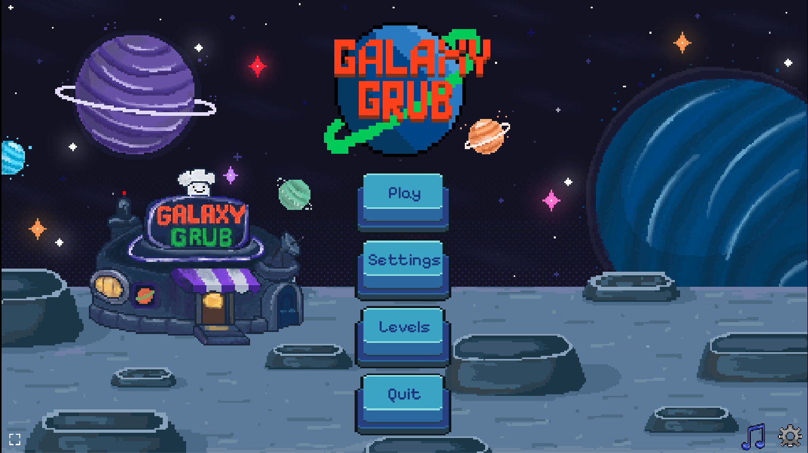
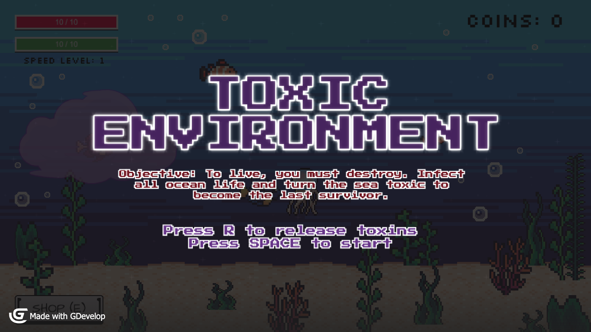
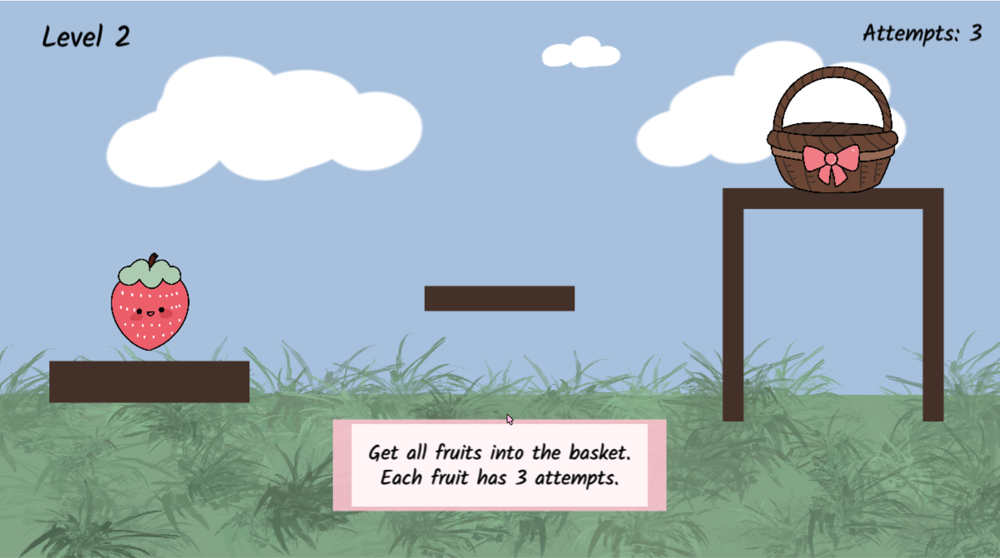
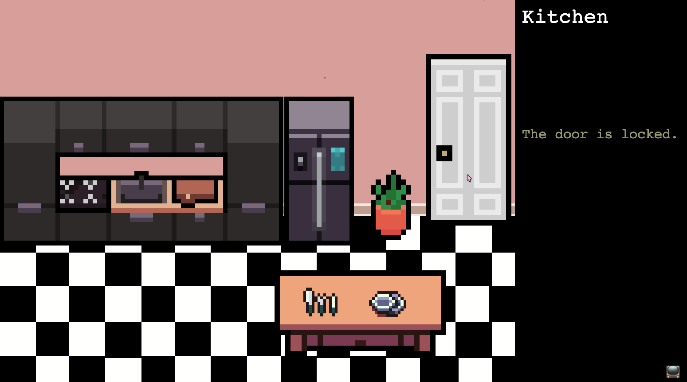
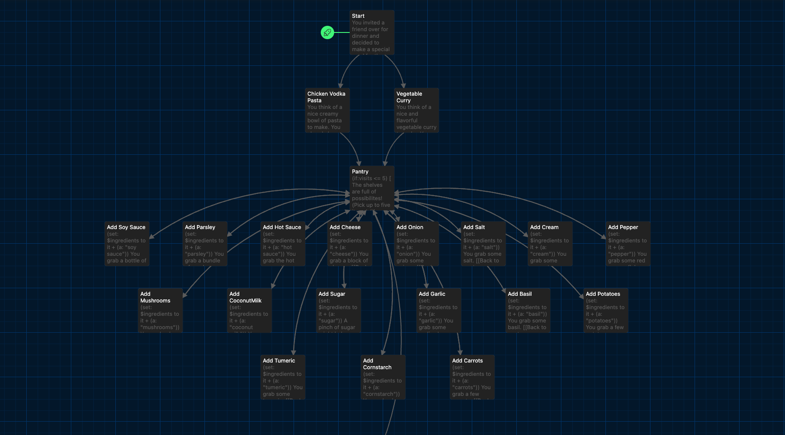
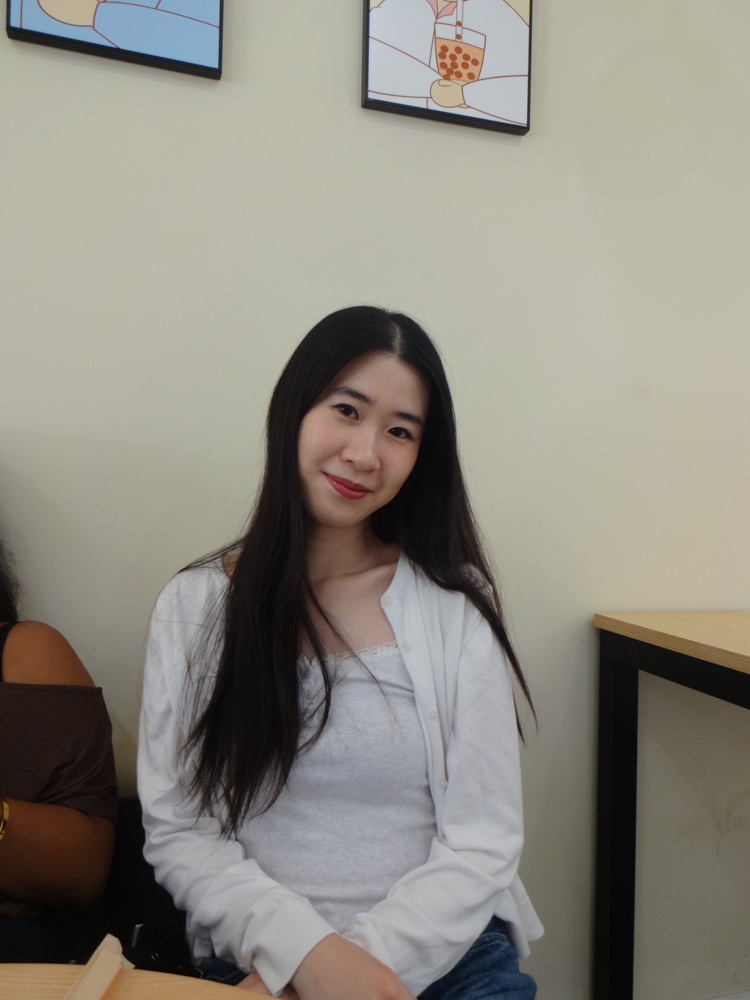
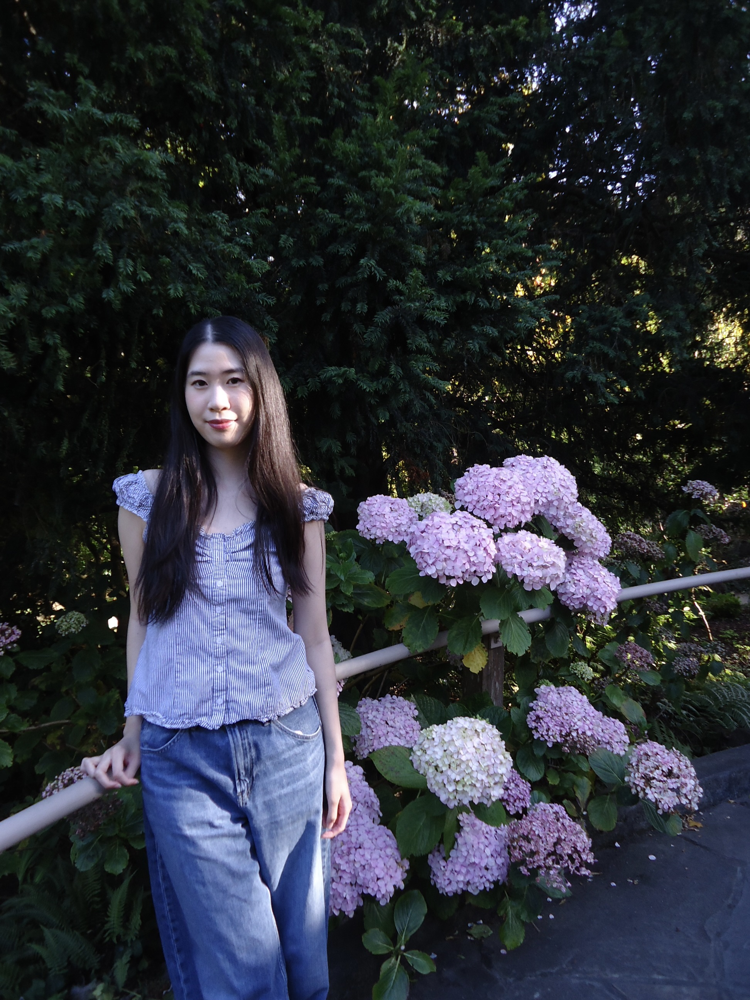
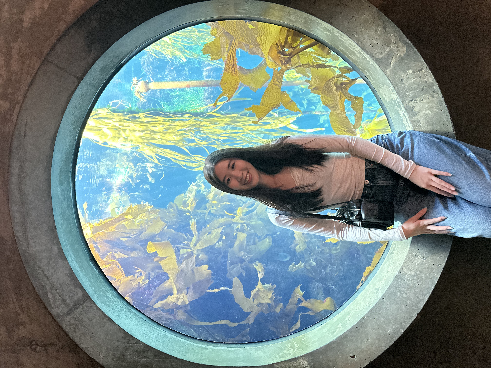
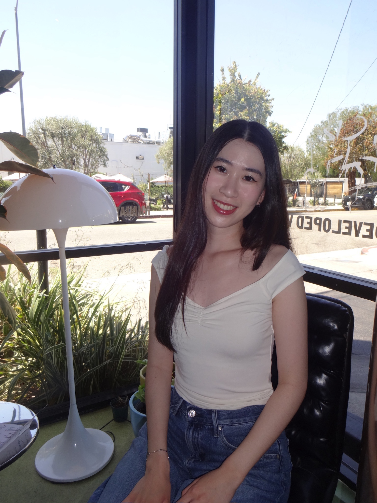

Projects
Galaxy Grub

Genre: Futuristic, sci-fi mobile game
Tools: Phaser, Procreate, pixilart.com, Piskel, Microsoft Paint
Team: 5-person project (with Jason Garabedian, Jenny Wong, Jose Baeza, Alexander Flores)
Role: Production Lead, Artist, Programmer
Galaxy Grub is a futuristic sci-fi based cooking game that takes place on a nearby moon in the far off future. Players take on the role of a chef who must complete a specific number of orders within a time limit to progress to the next level. Using movile drag and drop mechanics, players must grab ingredients quickly and combine them to create dishes to serve up. At each level the difficulty increases with more complex dishes and faster timers, creating new challenges for players to overcome.
Utilizing a procedural audio system, the game features a soundtrack that increases in intensity as the timer decreases, creating a sense of urgency and excitement for players. With features such as customizable settings that are saved in local storage, along with records of player times Galaxy Grub encourages players to improve their skills and compete for the best times. Play GameToxic Environment

Genre: 2D Survival Platformer
Tools: GDevelop
Team: 2-person project (with Alexander Flores)
Role: Gameplay Programmer, Designer, Playtester
Toxic Environment explores the collapse of an ecosystem driven by one creature's need for survival. Players control a toxic fish that spreads pollution through clean bodies of water to stay alive, gradually transforming the environment while balancing survival needs.
Developed key systems including marine animal behaviors, game visuals, UI screens (title, end, and credits), a coin and shop system, and a player speed-increase mechanic.
Play GameKing’s Underworks
Genre: Strategy Board Game
Tools: Procreate
Team: 2-person project (with Jay Chung)
Role: Game Designer, Artist, Playtester
King’s Underworks is a prison-themed board game where players compete to earn reputation points to reduce their sentence. A 52-card deck is used to move players across a 12×12 board and increase progression. Landing on different tiles can increase or decrease a player's reputation, while shortcut paths introduce high-risk, high-reward decisions. Players race across the board for a chance at freedom.
Developed key systems for King’s Underworks, including tile mechanics, positive and negative tile effects, and board layout design. Created visual assets by designing half of the tiles on the board. Contributed to the 52-card movement system and collaborated on gameplay balancing through multiple rounds of playtesting.
View Game Board View Rules (PDF)Fruit Blast

Genre: Physics-Based Interactive
Tools: Phaser
Team: Solo project
Role: Programmer, Artist
Fruit Blast is a physics-based game inspired by Angry Birds. Players launch fruit into a basket utilizing drag and release mechanics. As the levels progress, players need to overcome more challenging obstacles using timing and gravity.
Play GamePacking

Genre: Interactive Fiction
Tools: Phaser
Team: Solo project
Role: Programmer, Artist
Using Adam Smith's Adventure Prototype, Packing focuses on the aspect of moving from one place to another. It is a short interactive game to showcase how small actions like packing up items can be part of a larger journey. In addition to Smith's original portotype, Packing includes new features such as object pick-up and hover animations.
Play GameThe Meal

Genre: Interactive Fiction
Tools: Twine
Team: Solo project
Role: Writer, Designer, Programmer
The Meal is an interactive fiction game that focuses on a branching narrative and player choice. Players decide what meal to prepare for a visiting friend, with choices influencing the story’s outcome and the friend’s reaction.
Designed and implemented the narrative structure, branching logic, and player choices using Twine.
Play GameAbout Me 𐔌՞ ܸ.ˬ.ܸ՞𐦯




Hi! My name is Alicia, and I am a third-year Computer Science: Game Design student at UC Santa Cruz. I am interested in designing games with complex systems that allow for unique player interactions.
I've been playing video games since I was young, with some of my favorite games being Overwatch, Minecraft, Raft, and Genshin Impact. Through my gaming experiences, I'm drawn to how player choice, progression systems, and cosmetics can shape a player's experience and how it influences them to continue playing games.
I have been working on projects through my courses at UCSC, where I've explored gameplay programming using engines like Phaser, GDevelop, system designs with Machinations, and interactive storytelling through Twine.
Contact
Email: alicia.lulu.zhang@gmail.com
LinkedIn: linkedin.com/in/alicialuluzhang
GitHub: github.com/alluzhang